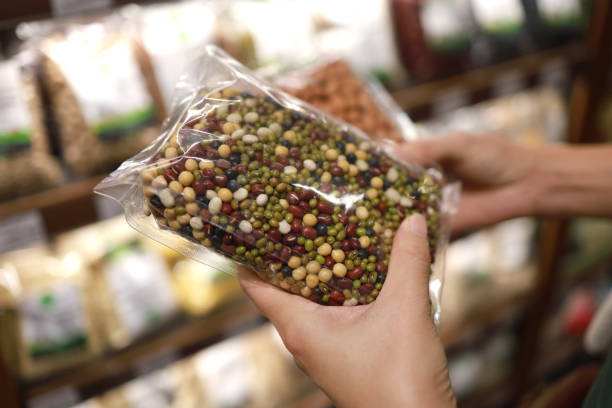

At Bean FARM, our mission is to provide delicious, sustainably grown beans while promoting environmentally friendly farming practices. We believe in the power of food to bring people together and strive to create a positive impact on both our local community and the environment.
